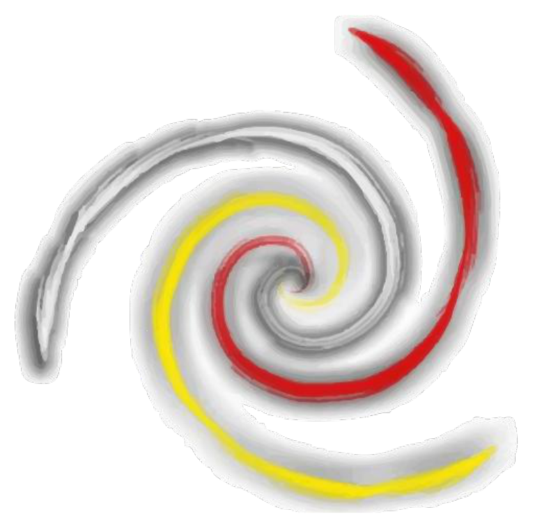

Identidad visual, segunda ronda: la estructura de la investigación
Todas parten de lo que hay en el tablero: tetraedros (K₄ con la arista oculta punteada) unidos por segmentos huecos, y la notación de la diferenciación de Zavadskij. Colores: rojo, amarillo, azul, negro y blanco.
D
Enlace
Dos tetraedros unidos por un segmento hueco. Es la unidad mínima de la estructura: aristas llenas para el tetraedro, arista oculta punteada, y el enlace dibujado como tubo vacío. Un tetraedro por área en la versión completa; dos bastan para el ícono.
Color
Una tinta
Negativo
Color sobre negro
Favicon y sello
Segundo EncuentroInteracciones entre Álgebra, Combinatoria y la ComputaciónBogotá, 19 y 20 de noviembre de 2026

15 añosITENUA
E
Triple enlace
Tres tetraedros, uno por área, enlazados en triángulo por segmentos huecos: la estructura del tablero reducida a su ciclo mínimo. Más rica como imagotipo y para afiches; en tamaños muy pequeños se usa la versión de un solo enlace (D).
Color
Una tinta
Negativo
Color sobre negro
Favicon y sello
Segundo EncuentroInteracciones entre Álgebra, Combinatoria y la ComputaciónBogotá, 19 y 20 de noviembre de 2026
15 añosITENUA
F
∇Δ, diferenciación
La notación del algoritmo de Zavadskij hecha marca: H∇ + HΔ. Un triángulo hacia arriba (el subíndice, abajo a la izquierda) y otro hacia abajo (el superíndice, arriba a la derecha) que comparten la arista diagonal: juntos forman un paralelogramo, que es también dos caras desplegadas de un tetraedro. La más simple de todas y la que mejor se reproduce; funciona muy bien como sello y como patrón repetido.
Color
Una tinta
Negativo
Color sobre negro
Favicon y sello
Segundo EncuentroInteracciones entre Álgebra, Combinatoria y la ComputaciónBogotá, 19 y 20 de noviembre de 2026
15 añosITENUA
G
Gancho de Zavadskij
El diagrama del tablero: un punto base con dos brazos que suben a dos puntos, y encima el poset derivado. Menos ícono y más "firma gráfica": sirve como motivo de fondo, separador y patrón, y acompaña a cualquiera de las anteriores.
Color
Una tinta
Negativo
Favicon y sello
+
La estructura completa como patrón
Para cabeceras, afiches y diplomas: la cadena de tetraedros enlazados, como en el tablero. Se genera con el mismo dibujo que los íconos D y E, así que toda la identidad usa un solo trazo.
Certificado de asistencia
Segundo Encuentro Interacciones entre Álgebra, Combinatoria y la Computación
Bogotá, 19 y 20 de noviembre de 2026
Bogotá, 19 y 20 de noviembre de 2026
Nombre Apellido Apellido